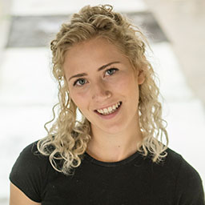

School of Art, Design and Architecture
BA (Hons) Fine Art
| UCAS tariff | 96 - 144 |
| UCAS course code | W100 |
| Institution code | P60 |
| Duration | 3 years |
| Assessment breakdown | 100% coursework |
| Course type | Full-time |
| Location | Plymouth |
Our friendly studio-centred programme will support you to understand and participate in the expanded forms of making, thinking and writing that reflect art practice today. Be guided by practising artists, curators, producers and writers to explore concepts, contexts, techniques, and technologies across sculpture, installation, performance, video and digital media, painting and drawing.
About the course
Make, use and analyse images, engaging directly with the world around you while exploring the medium’s endless potential. Develop a clear understanding of photography in its wider historical, cultural and professional context and be equipped with the skills to achieve and sustain your career ambitions in the creative industry. Our diverse teaching team, purpose-built environment and advanced facilities enable you to establish your unique style and personal visual language.
- Have the freedom to develop your photography using our extensive analogue and digital facilities and resources.
- Use your photography to raise awareness and promote change in response to global challenges and environmental issues.
- Work with creative businesses, charities and organisations to gain real-world experience.
- Experience international opportunities through European field trips and established connections for studying abroad.
- From making images on Dartmoor National Park in the morning to paddleboarding on the Plymouth Sound in the evening, enjoy the varied and unique quality of life in the city and its coastal location.
- Learn from contemporary professionals to help shape your future via our Artist Talks programme.
- Follow in the footsteps of our prize-winning and successful alumni and achieve a career in various fields of the industry: editorial, commercial, art direction, assisting, styling, curating, picture editing, teaching and arts practice.
Course structure
Year 1
Experiment & Explore
- Technical workshops and hands-on activities establish an understanding of professional working methods, including studio practice, analogue processes, digital workflow, bookmaking, and digital and traditional printing.
- Work with new people in new places in new ways. Whether it is making images on the Dartmoor field trip or working collectively on a brief directed by an industry professional, new opportunities will be available to you.
- Lectures and seminars contextualise your work through the study of contemporary and historical practices.
Core modules
Essentials
PHO401
In this module students are introduced to core photographic, technical and methodological processes and principles. Key photographic methodologies are explored through workshops, tutorials and personal photographic exploration.
Developing Practice
PHO402
This module aims to further establish key processes, skills and methodologies fundamental to photographic activity. Students relate contextual knowledge gained through research via the critical analysis of students’ own work and that of contemporary and historical practitioners.
Tableaux
PHO403
This module enables students to begin to establish their understanding of professional contexts by responding to a ‘live brief’ set by a designated industry stakeholder. The brief will engage students to work in groups to produce, construct and photograph an ambitious narrative tableaux in the studio or on location.
Storytelling
PHO404
Students explore the process of storytelling in the form of a photo essay and bookwork, introducing and expanding the practices of editing, sequencing, layout, and design. The principles of ethical representation will be introduced into their contextual understanding. Students will further develop synergies between practice and historical cultural contexts through written and verbal form.
Year 2
Develop & Collaborate
- Develop new ways of working and thinking about photography through the teaching of new technologies and methods of production and publication.
- Work across disciplines using one of the United Nations Sustainability Development Goals to engage with and promote awareness of global (environmental) concerns.
- Begin to consider your future and life after graduation by researching career opportunities and engaging in the Artist Talks programmes with established professionals.
Core modules
Mediations
PHO501
This module engages students in forms of contemporary photographic practice involving still and moving image, sound and text. A single multimedia time-based output is constructed over the course of the module. Emphasis is placed on developing work that is informed by an understanding of historical and contemporary lens-based practice and culture and associated contextual research (theoretical and practical).
Futures
PHO502
The module is designed to contribute the development of students’ contextual understanding of their discipline, and focus this towards identifying personal career aspirations, means of sustainable career development, and the opportunities offered, directly and indirectly, by the industry.
Common Challenge: Collaboration
PHO503
The module offers the opportunity to students to look outwards, to engage or work with others collaboratively. Thematically, the research and project focus will relate to UN Sustainable Development Goals incorporating an interdisciplinary agenda. Student practice is developed through interaction, exchanging of ideas and actively researching/collaborating with an external individual, group or organisation.
Establishing
Practice PHO504
In this module, students negotiate a theme from which to develop a series of art/media/design works or artefacts. They are expected to experiment with media/s in order to develop and produce a body of work that explores the practical, theoretical and technical aspects of their individual areas of interest within photography. Students are introduced to and prepare for the Common Dissertation module.
Final year
Resolve & Exhibit
- Research, produce and resolve a major body of work for publication and exhibition at the Summer Degree Show.
- Consolidate and refine career ambitions and life after graduation through talks and workshops from graduates and industry speakers.
- Contextualise and critically articulate your work in relation to various audiences and the opportunities these provide: editorial, commercial, fashion, fine art, postgraduate study and research.
Core modules
Common Dissertation: Critical Practices
ADA600
The module engages students in situating practice through research, contextualisation and critical reflection, in relation to their final stage study and post University aspirations. Programmes can offer: a traditional dissertation; preparation for an extended dissertation; situating existing practice; or the construction of a new body of work as practice-based research.
Negotiation
PHO602
In this module each student develops an experimental programme of photographic practice in negotiation with tutors, through careful reflection on personal aims and objectives for the final year of study.
Resolution
PHO603
After an initial period of self-initiated preparation, research and consultation, students prepare and submit a written proposal for the consolidation of a body of work. Subject to the approval of the module team, the student undertakes a period of self-negotiated study leading to the production of a substantial body of work, supported by a critical reflection.
Optional modules
Extended Dissertation
PHO604
This module completes the Photography research syllabus with an extended essay, researched and written by each student. Students have the opportunity to research and reflect on a subject of their choice, within an area associated with their practice discipline.
Professional Futures
PHO605
Delivered across the third and final year, this module is geared towards students focussing on their career aspirations post university and researching, collating, reflecting and networking to create an ‘exit-strategy’ that will enable them to be ‘ready and able’ and to achieve potential employability.
Teaching, learning and assessment
Facilities and equipment
Photography requires more than a camera. We provide access to an extensive range of high-specification facilities and equipment so that you can focus on developing your creative practice.
Explore photography facilities
The quality of creative space and inspirational input has proven to be invaluable to me in developing my artistic practice.
BA (Hons) Photography graduate, Darren
Showcase your work
Creative talent and skills need a platform. Every year, our photography students have an opportunity to exhibit their work at the Art, Design and Architecture Graduate Show.
Through our strong city partnerships, students are able to publicly promote their work to creative industry members and the wider art community.
Examples of student work
Highlighting the issue of food poverty
Harry Gennard captures the stark reality of food poverty in modern Britain.
Documenting preservationists who rediscover the workings and history of old mines
Nicholas Cade discusses his final year project.
[https://www.youtube.com/watch?v=To6_n6EOF_s]
Producing portraits that focus on the emotional wellbeing of a person and the way we react to sudden grief
Eliza Naish talks about her project – photo therapy for herself, helping her to come to terms with what is happening in her family.
[https://www.youtube.com/watch?v=E1AHizhSGPQ]
Follow our students and their work on Instagram
@photoplymouth
Learn from experts
 Angus Fraser
Angus Fraser
Lecturer in Photography
 Heidi Morstang
Heidi Morstang
Associate Professor in Photography
 Simon Standing
Simon Standing
Associate Professor (Senior Lecturer) in Photography
 Jessica Lennan
Jessica Lennan
Lecturer in Photography
Caroline Burke
Lecturer in Media Arts
 Colin Robins
Colin Robins
Lecturer in Photography
Study options
Foundation year
- Develop skills across a range of media and introduces creative best practice in preparation for the first year of the undergraduate programme.
- Explore creative processes relevant to visual design, animation, illustration, printmaking, fine art, and photography.
- Gain experience in an engaging and vibrant studio setting.
If you successfully complete the foundation year, you will join year one of BA (Hons) Photography equipped with the skills and knowledge needed to successfully complete an undergraduate degree.
Part-time study
There is an option to study this course part time. The foundation year cannot be studied part time.
International study
This course includes the option for a funded residential trip outside the UK in year one. In the second year, students are supported to complete study abroad for a minimum of 10 weeks.
Find out more about studying photography abroad
Progression routes
Progression from a partner institution
There are opportunities to progress onto this degree from a course delivered at one of our partner institutions.
FdA Photography
Exeter College
FdA Film and Photography
South Devon College
FdA Film, Media and Photography
Truro and Penwith College
Postgraduate masters programmes
Career opportunities
I have been interested in photography for as long as I can remember, but everyone in Plymouth was hugely supportive in helping me to pursue my dream. To win two national prizes when I am still developing my skills as a photographer is incredible, and my job with South West News is offering me some fantastic opportunities and subjects.
Graduate David Hedges is a Staff Press Photographer with South West News Service (SWNS), and has won major awards for his work.
Throughout the course, students will develop and consolidate their knowledge and understanding of what it takes to be a creative working in the photographic industry and the transferable skills required to be sustainable and ultimately successful.
The professional practice modules at each stage are designed to contribute to the refinement of students’ contextual understanding of their discipline and enable them to focus this towards identified personal career aspirations and the opportunities offered – directly and indirectly – by the industry.
Entry requirements
Year one
A portfolio is a requirement for entry onto this course.
UCAS tariff
96–120
A levels
A minimum of two A levels; General Studies accepted.
International Baccalaureate
26–28 points.
18 Unit BTEC National Diploma/QCF Extended Diploma
DMM.
BTEC National Diploma modules
If you hold a BTEC qualification, it is vital that you provide our Admissions team with details of the exact modules you have studied as part of the BTEC. Without this information, we may be unable to process your application quickly and you could experience significant delays in the progress of your application to study with us. Please explicitly state the full list of modules within your qualification at the time of application.
All access courses
Pass a named Access to Higher Education Diploma (preferably Art and Design or combined) with at least 33 credits at merit and/or distinction.
T level
Merit in digital production, design and development.
GCSE
Mathematics and English Language grade C.
Equivalent qualifications may be considered; please contact admissions@plymouth.ac.uk
We welcome applicants with international qualifications. To view other accepted qualifications, please refer to our tariff glossary.
Foundation year
UCAS tariff
32–48
Don’t have enough UCAS tariff points? We will consider ‘non-standard’ applications on a case-by-case basis.
A levels
For Level 3 entry the Tariff points entry level will normally be 32–48 points from A level or equivalent. Non-standard applicants will normally be interviewed.
BTEC National Diploma/QCF Extended
Irish Leaving Certificate
Irish Highers, H5 in five subjects equivalent to 32–48 points.
International Baccalaureate
24 overall
T levels
Pass in any subject.
Proficiency in English
Students for whom English is an additional language will need to demonstrate ability in spoken and written English equivalent to an IELTS score of 6.0 and/or successfully complete the university’s special test before entering the foundation year.
We welcome applicants with international qualifications. To view other accepted qualifications please refer to our tariff glossary.
We are looking for applicants with good potential including with non-standard qualifications and background, so will consider every application on a case-by-case basis. Alternatively, if you have any questions or concerns about meeting the entry requirements listed above we would encourage you to contact the Admissions Team on +44(0)1752 585858 or email admissions@plymouth.ac.uk, where a member of the team can offer you further advice.
Fees, costs, and funding
2022 / 2023
| Full-time fees (per annum) | |
|---|---|
| UK residents | £9,250 |
| International students | £14,600 |
| Part-time fees (per 10 credits) | |
|---|---|
| UK residents | £770 |
| International students | £770 |
Please note that fees are reviewed on an annual basis. Fees and the conditions that apply to them shown in the prospectus are correct at the time of going to print. Fees shown on the web are the most up to date but are still subject to change in exceptional circumstances.
More information about fees and funding
Additional costs
There is a wide range of technical resources and equipment that students can access. This is covered by the course tuition fees.
However, like all visual art disciplines, students will have their own unique way of making their photography and for this reason a student might incur extra costs based on their unique practice and research.
This may include:
- Books – the library is well stocked with titles appropriate to the study of photography and visual culture, but specific titles focusing on your specific area of interest might have to be purchased)
- Printing and photocopying – even if you primarily use digital cameras and technology, there are requirements to print your work out for assessment
- Photographic materials – analogue film and paper, mounting and framin
- Optional national and international study trips
- Placements – if you are on placement, there may be additional costs incurred for subsistence and travel to consider
How to apply
All applications for undergraduate courses are made through UCAS. Further information about application, including deadline dates can be found on the UCAS website.